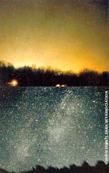
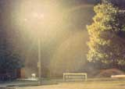

Today, most young Americans have never seen a naturally dark and starry sky. The awesome sight of the universe's brilliance, which has inspired humanity for millenia, is being lost to 21st century excess. The cause? Light pollution: excessive or misdirected outdoor lighting. Light pollution threatens not just the starry night but also our pocketbooks, our health, flora and fauna, motorist safety and much more.
Some places have already put laws in place to fight light pollution. But much more action is needed.
By lighting up the atmosphere with "skyglow" for miles around small cities, and dozens of miles around larger ones, light pollution robs us of our awesome view of our place in the universe. But this form of pollution also robs us of money and energy. Studies show that just the light going off directly into outer space because of poorly shielded or unshielded fixtures is wasting several billion dollars in the United States each year, more than the entire annual energy consumption of most countries. Light pollution therefore contributes to the need for more power plants and their resultant air and water pollution.
Light pollution also creates some more immediately dangerous situations. For example, "glare" - unwanted light that shines directly into people's eyes - makes driving morc hazardous for motorists.
Light pollution has harmful effects on nocturnal flora and fauna. Many sea turtles, for example, have been lured inland to their deaths by poorly shielded lights, prompting some areas of Florida to pass laws to reduce light pollution.
Fortunately, about 75 percent of all light pollution can be eliminated by lighting fixtures and practices that already exist, such as full cut-off (FCO) fixtures, which keep light below the horizontal plane of the fixture. Better directed light means less energy consumed and better visibility.
State laws against light pollution have been passed in several states in recent months and are getting stronger. For instance, a Connecticut law requires new and replacement fixtures on all roads to be FCO. A new Vermont prison paid local businesses to reduce their own light pollution to offset what the facility would have to produce for safety, according to Environmental Building News.
An easy place to find out about your state, city or county's light pollution laws is www.darksky.org, the Web site of the International Dark-Sky Association (IDA). When you visit the site you can learn not only what light pollution is, but what you can do about it. Call (520) 293-3198 or write to IDA (3225 N. First Ave.; Tucson, AZ 85719) if you don't have easy Internet access.
Membership in the International DarkSky Association recently has been growing rapidly, but much more help is needed. Consider joining this vital organization to take back the night sky. This is a rare situation in which everyone can win.
-By Fred Schaaf
|
 Compare the view of a night sky from a light-polluted city and the same sky from a vantage point without light pollution |
 A car dealership wastes energy while polluting the surrounding area with light |
|